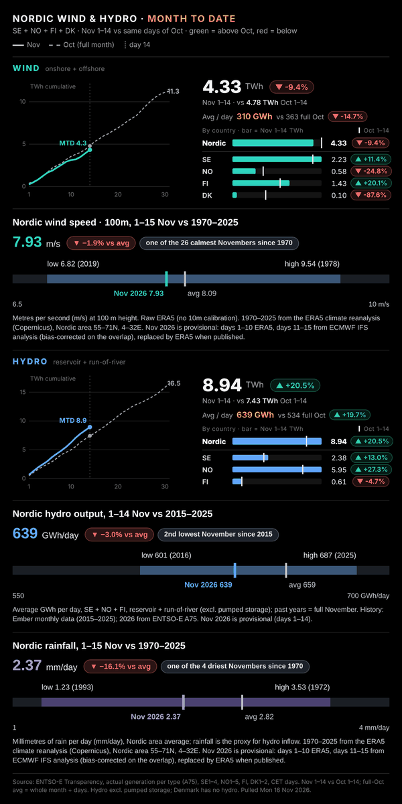
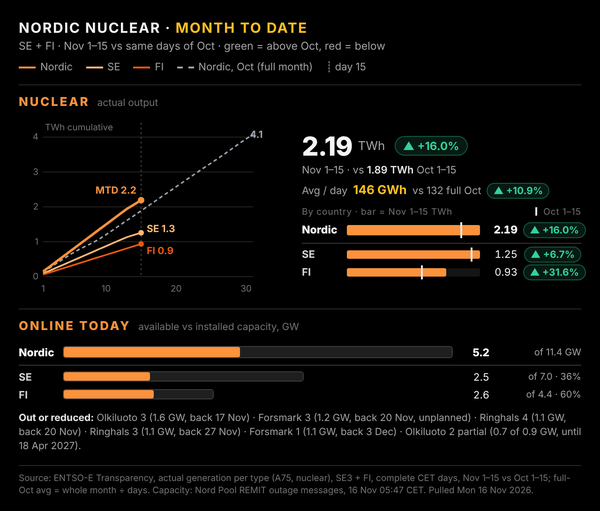

MARKET PULSE Asia's chip markets slide into Nvidia week Mon 16 Nov 2026 · new since the Sunday look-ahead (Sun 20:45) · Fri 13 Nov close already covered · Zurich time | | IN THIS BRIEF 1 Asia & overnight · 2 Nordic power · 3 Top 5 reads · 4 News · 5 Calendar | • Asia opened the week by selling the AI supply chain. Taiwan and Korea took the brunt, Tokyo followed, while Hong Kong edged up and mainland China barely moved, so this is a chip trade unwinding rather than a regional rout. Nasdaq futures are softer than the S&P, which points the same way. • Nvidia's results on Tuesday night are now the week's test for the whole theme. Washington plans to name Nvidia and other AI firms national champions, which offers political cover but does not answer the leadership questions hanging over the company. • Iran struck Bahrain overnight, widening the Gulf hostilities beyond the Houthi attacks on Riyadh covered on Sunday. Crude barely reacted, a sign the market still sees no hit to Gulf supply; a strike on export infrastructure would change that quickly. • China's October activity data came in weaker than expected, adding to the case for faster budget spending in Beijing. Nordic power jumped back into the working week, with Finland and the northern Swedish zones rising from very low Sunday levels. | 1 · Asia & overnight Taiwan and Korea lead a chip-led sell-off | | Nikkei 225 | 60,075 | −1.8% | Mon 05:32 | | Kospi | 5,151 | −2.7% | Mon 05:27 | | Taiex | 41,844 | −4.4% | Mon 05:27 |
Material moves only (Asia ≥1%, equity futures ≥0.7%, oil ≥1.5%, FX ≥0.3–0.5%), markets that traded after the last brief. Little changed: Hang Seng +0.8% · ASX 200 −0.2% · Shanghai Comp. −0.3% · S&P 500 fut. −0.3% · Nasdaq 100 fut. −0.6% · Brent Jan-27 −0.6% · WTI Dec-26 −0.3% · Gold −0.3% · EUR/USD −0.1% · USD/JPY −0.0% · EUR/CHF +0.0%. Time = last quote, Zurich. Yahoo Finance. | Our view. Last week's Asian bounce has been handed back where it was strongest, which says investors are cutting AI exposure before Nvidia reports rather than waiting for the numbers. Weak Chinese data adds a growth worry on top. Watch whether Europe's open and the US cash session follow Asia's chip names or treat this as a pre-earnings shakeout. | 2 · Prices, wind and hydro Prices jump back into the working week | | Daily average day-ahead price, EUR/MWh, delivery Mon 16 Nov vs Sun 15 Nov. | | Area | Mon 16 | Sun 15 | Chg | Oct avg | Nov 1–14 | | SYS | 142.6 | 22.9 | +522% | 88.2 | 133.4 | | SE1 | 30.4 | 9.9 | +208% | 27.3 | 27.9 | | SE2 | 34.2 | 10.1 | +240% | 32.7 | 27.3 | | SE3 | 149.8 | 60.1 | +149% | 73.6 | 169.0 | | SE4 | 196.2 | 99.0 | +98% | 140.6 | 271.8 | | DK1 | 194.5 | 137.4 | +42% | 159.9 | 256.1 | | DK2 | 195.7 | 135.8 | +44% | 163.0 | 269.7 | | NO1 | 182.8 | 152.5 | +20% | 132.1 | 193.0 | | NO2 | 191.2 | 156.3 | +22% | 140.4 | 210.6 | | NO3 | 124.4 | 92.6 | +34% | 92.0 | 115.3 | | NO5 | 185.9 | 155.5 | +20% | 126.9 | 193.8 | | FI | 89.5 | 9.7 | +818% | 38.0 | 62.1 | | DE Germany · not Nordic | 194.5 | 139.7 | +39% | 169.5 | 258.9 |
|  |  | Our view. Sunday's collapse was a weekend and wind effect, and the Monday rebound puts the whole region back in its November pattern: the south priced off Germany, the north cheap. November has been less windy than October, with hydro making up the gap, which draws on reservoirs heading into winter. More nuclear back online is the main thing holding Finland and SE3 below the continental level. | 3 · Top 5 reads Worth your time | John Authers · Bloomberg Opinion · 2026-11-16 After the Huang scandal, AIndicators look shakier Authers argues the signals markets use to judge the AI trade have weakened since the Nvidia leadership scandal, with the chipmaker sliding to a 17-month low ahead of Tuesday's results. He also notes US air traffic is still disrupted after Friday's nationwide ground stop. Why it matters. Frames Nvidia's results this week as the test for the AI trade. Geopolitics · FT News · Mon 05:38 Beijing has pushed to speed up budget spending to overcome weaker growth AI & tech · FT News · Mon 05:36 Seoul promises crackdown just days ahead of annual university entrance test Geopolitics · FT News · Mon 05:01 Summit’s ivonescimab was seen as a test case for whether the country’s medicine could pass scrutiny in the US AI & tech · FT News · Mon 05:00 Zoë Yujnovich on running Britain’s power network when ‘offensive capability is moving faster’ | 4 · News by topic Today's news | | 5 · Calendar Week ahead | | When (Zurich) | What | | Mon 16 Nov 00:50 | ● KEY · Data
Japan Q3 GDP (preliminary), 08:50 Tokyo | | Mon 16 Nov 03:00 | Data
China industrial output, retail sales, fixed-asset investment (October), 10:00 Beijing | | Mon 16 Nov 14:30 | ● KEY · Data
Canada October CPI | | Tue 17 Nov 01:30 | ● KEY · Central bank
RBA minutes of the November meeting | | Tue 17 Nov 08:00 | Data
UK labour market (unemployment, September; wages) | | Tue 17 Nov 14:30 | Data
US retail sales (October) and import prices | | Tue 17 Nov 15:15 | Data
US industrial production (October), Fed G.17 | | Tue 17 Nov 23:00 | Earnings
Nvidia Q3 FY27 results (after the US close), call 5pm ET | | Wed 18 Nov 08:00 | ● KEY · Data
UK October CPI (ONS, 07:00 UK) | | Wed 18 Nov 11:00 | ● KEY · Data
Euro-area October HICP (final) | | Wed 18 Nov 16:30 | Energy
EIA weekly petroleum status report | | Wed 18 Nov 20:00 | ● KEY · Central bank
FOMC minutes of the 27–28 Oct meeting (2pm ET) | | Thu 19 Nov 14:00 | Earnings
Walmart Q3 FY27 results (materials ~6am CT), call 7am CT | | Thu 19 Nov 14:30 | Data
US jobless claims and Philadelphia Fed survey (November) | | Thu 19 Nov | ● KEY · Central bank
SARB policy decision | | Fri 20 Nov 00:30 | ● KEY · Data
Japan October CPI | | Fri 20 Nov 02:00 | ● KEY · Central bank
China loan prime rates (November), 09:00 Beijing | | Fri 20 Nov 08:00 | Data
UK retail sales (October) | | Mon 23 Nov 10:00 | Data
Flash PMIs: euro area 10:00, UK 10:30, US 15:45 (November) |
● KEY = market-moving: central-bank decisions, CPI/PCE/GDP/jobs, budgets, OPEC | | Sources: Yahoo Finance, CNBC, Investing.com, FRED (St. Louis Fed), Eurostat, ONS/OECD, SFSO, Statistics Japan, US EIA, GIE AGSI+ via the markets-monitor feed, Wikipedia (S&P 500 members), iShares (STOXX Europe 600 holdings, EXSA), Nord Pool, ENTSO-E, FT (RSS + myFT Daily Digest), Google News (trusted outlets), curated calendar. Views are our house view: market commentary, not investment advice. No data gaps. Built Mon 16 Nov 2026 05:48 Zurich. |
|